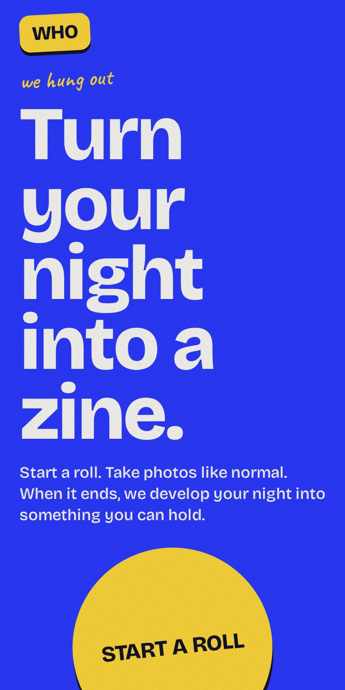
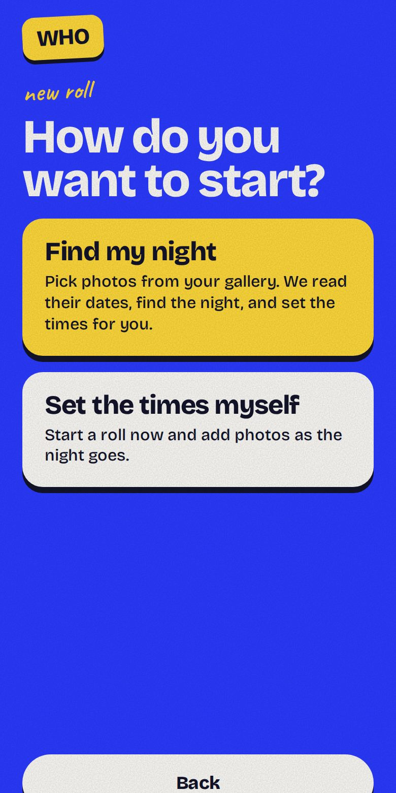
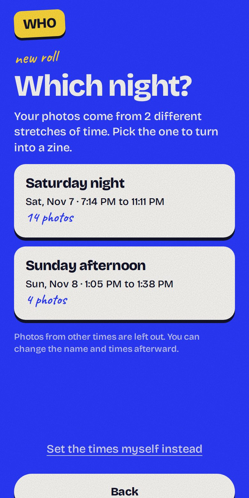
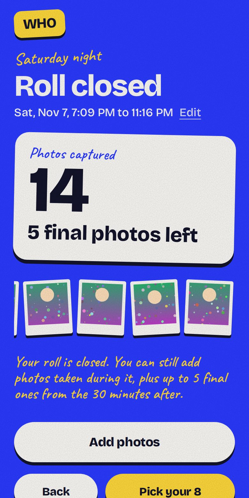
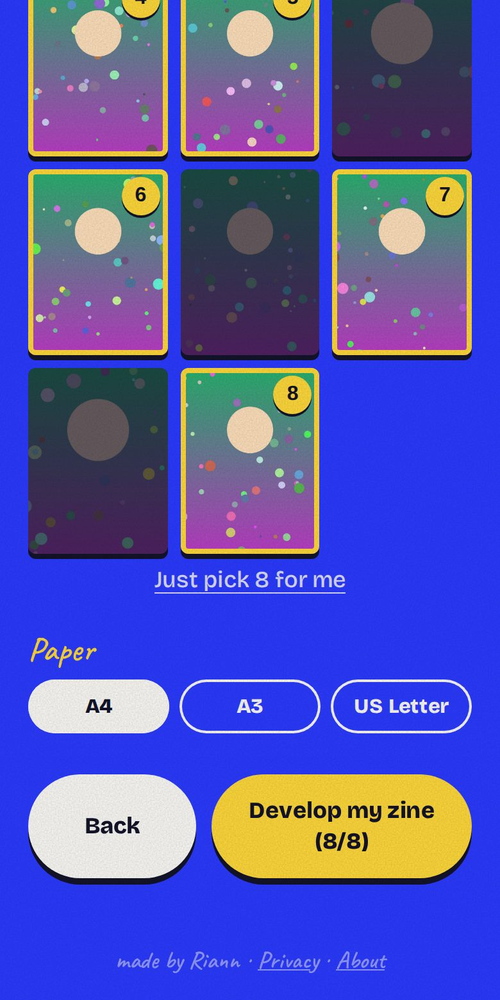
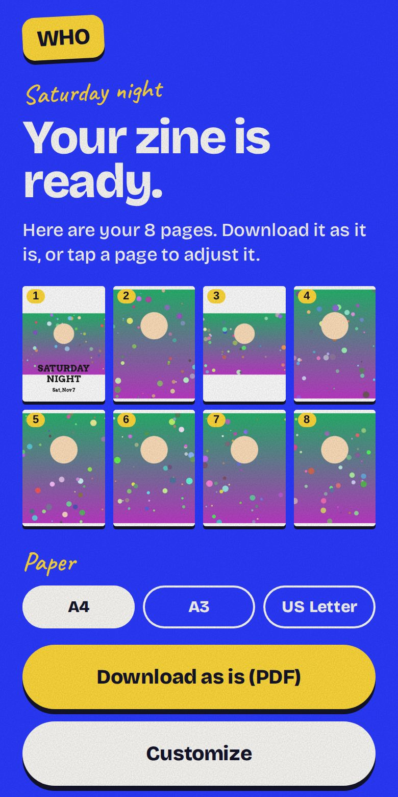
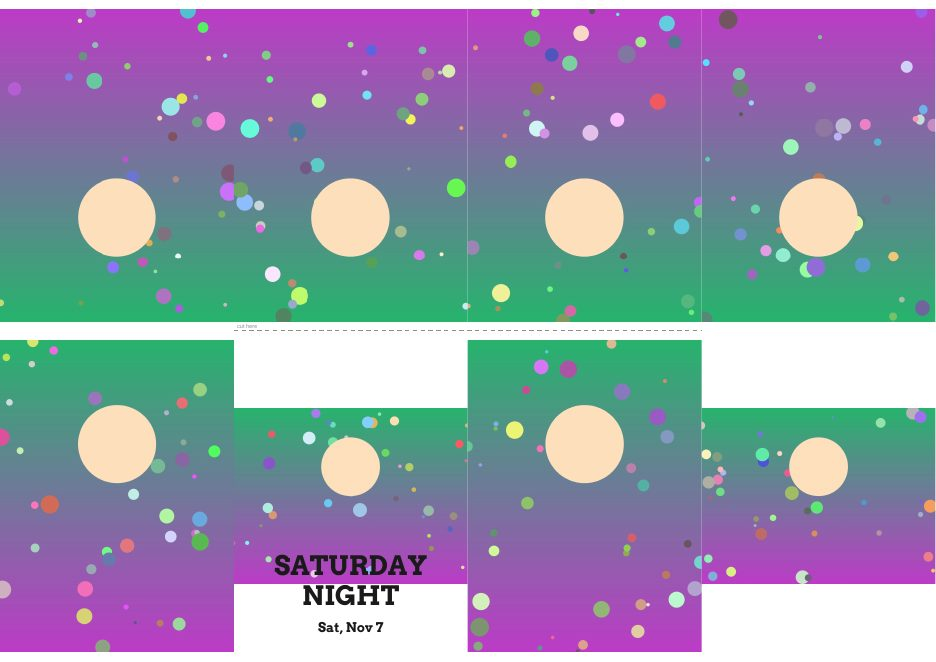

This page is plain text on purpose, so it can be read by people and by AI tools that can't run the app. The app itself runs entirely in the browser, and a page-fetching tool only sees an empty shell of it. The screenshots below show every step.
In one sentence
We hung out turns a night of photos into a printable, foldable 8-page zine: you choose up to 8 photos, adjust the look, download a single PDF sheet, print it on one piece of paper, make one cut, and fold it into a small booklet.
The idea
It started as a "digital disposable camera": you start a roll for a window of time (for example 7 PM to 11 PM), take photos as usual, and when the roll ends the app "develops" your night into something physical. The target audience is Gen Z: friend groups, parties, trips, birthdays, college events. The product feel is tactile, photographic and a little playful, not a corporate dashboard. Visual identity: electric blue, flash yellow, chunky type, handwritten accents.
Two ways to start
Start a roll. Either "Find my night" (pick photos from your gallery and the app reads their capture times, finds the night, and sets the roll's start and end for you) or "Set the times myself" (start a roll now and add photos as the night goes). Only photos taken during the roll count, plus up to 5 "final" photos from the 30 minutes after it ends.
Make a zine now. Any photos from any day, no time rules, up to 40 photos to choose from. Works like Dirty Little Zine, but with the roll ritual as the main attraction.
How it works, step by step

1. Home: two doors, "Start a roll" and "Make a zine now".

2. Start a roll: "Find my night" or set the times yourself.

3. The app groups the photos into nights and asks which one to use.

4. The roll: photo count, window, polaroid strip. Back and Edit are always available.

5. Pick up to 8 photos, in page order. Page 1 is the cover.

6. After a short "developing" animation: a preview of all 8 pages. Download as is, or customize.
The downloaded PDF is one landscape sheet (A4, A3 or US Letter) with 8 panels. The top row is printed upside down on purpose so every page reads upright after folding. A dashed "cut here" line marks the single cut. The page layout follows a real export from dirtylittlezine.com (bottom row: back cover, front cover, page 2, page 3; top row: pages 7, 6, 5, 4).

The printable sheet (sample photos).
What you can customize today
Photo order (the order you tap), paper size (A4, A3, US Letter).
Per page: photo or plain text page, fit (auto, fill, show whole photo), zoom, move left/right and up/down, caption, swap the photo.
Cover: title and subtitle text, size, nine positions, color, capital letters on or off.
Photos are read, resized and stored on the device (in the browser's own storage). They are never uploaded. The PDF is created in the browser too.
No accounts, no analytics, no ads, no third-party scripts or fonts.
Installable to the home screen (a progressive web app). See the privacy page.
Honest limitations right now
One photo per page, so a zine holds at most 8 photos. No multi-photo layouts or photos spanning two pages yet.
Moving and zooming a photo uses sliders, not pinch or drag.
No accounts and no library of past zines: everything lives in one browser on one device. Clearing browser data loses it.
No AI photo selection in the live app. An AI selection pipeline was built earlier and is parked.
A website cannot scan a phone's gallery, so "Find my night" works on photos the person selects, using each photo's embedded capture time (or file date when there isn't one).
Importing a big batch on iPhones can be slow, partly because the phone prepares the photos before handing them over.
Mostly tested in desktop browsers; real-phone testing is still thin. The folding steps match the standard single-cut method but need confirmation from more physical prints.
Ideas under consideration (not promises)
Multi-photo pages and photos across two pages; cover templates; pinch and drag editing; a "My zines" library on the device; a camera inside the app with a limited number of shots per roll; shared group rolls; a print-shop handoff; photo looks (grain, black and white). Accounts and any paid tier are deliberately postponed.
Questions worth brainstorming
Is the "roll" idea (a time window that becomes a zine) compelling, or would people rather just make a zine from any photos?
Is the first screen clear about what the app does? What would you change about the wording?
Does "Find my night" feel magical or confusing?
Would you actually print and fold a zine? What would make that easier (templates, a print shop, a ready-made folded booklet)?
Who is the best first audience, and where would they hear about it?
What would make someone come back every week, not once?
What would you pay for, if anything? What should always stay free?
Which single feature would make the biggest difference: group rolls, an in-app camera, templates, or something else?
What are the main trust or safety concerns with a photo app, and how should the app address them?
How would you rate the concept, design, ease of use and what to fix first?